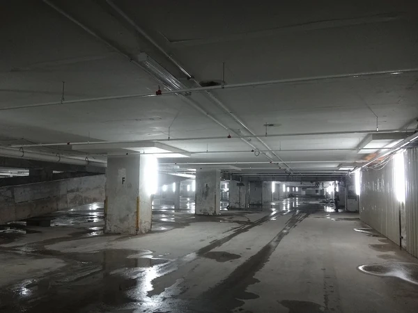

TODOS LOS NIVELES DE LAS BACKROOMS
NIVEL 0 - LAS HABITACIONES AMARILLAS
Peligro: Bajo
Entidades: Ninguna (inicialmente)
El nivel más icónico. Un laberinto infinito de habitaciones con papel tapiz amarillo,
alfombra húmeda y luces fluorescentes que zumban constantemente. No hay mobiliario
y todas las habitaciones son idénticas. La desorientación y la soledad son los
mayores peligros. Es el punto de entrada para la mayoría de los exploradores.

NIVEL 1 - EL ALMACÉN
Peligro: Medio
Entidades: Hounds, Smilers
Un almacén industrial infinito con estanterías metálicas. Aquí aparecen los primeros
recursos como agua embotellada y latas de comida. También es el hogar de los Hounds,
bestias caninas sin rostro que acechan en la oscuridad. Es uno de los niveles más
habitados por exploradores.

NIVEL 2 - LOS TÚNELES
Peligro: Alto
Entidades: Smilers, Hounds
Túneles de mantenimiento con tuberías que gotean y paredes de hormigón. La temperatura
es elevada y el aire es pesado. Los Smilers (sonrisas flotantes con dientes) son comunes
aquí. Las paredes a veces se mueven y pueden atrapar a los exploradores.

NIVEL 3 - LA CENTRAL ELÉCTRICA
Peligro: Muy Alto
Entidades: Varias (Smilers, Clumps, Skin-Stealers)
Una central eléctrica abandonada con maquinaria ruidosa y estática. Las entidades son
más agresivas. Se dice que aquí se formaron los primeros grupos de exploradores.
El ruido constante puede volver locos a los exploradores.

NIVEL 4 - OFICINAS VACÍAS
Peligro: Bajo
Entidades: Ninguna
Un nivel seguro con oficinas abandonadas. Hay computadoras que aún funcionan y muestran
mensajes de otros exploradores. Es un buen lugar para descansar y recolectar recursos.
Es uno de los niveles más habitados.

NIVEL 5 - EL HOTEL
Peligro: Medio
Entidades: Smilers, Partygoers
Un hotel infinito con pasillos interminables y habitaciones idénticas. Las luces
parpadean y se pueden escuchar risas distantes. Los Partygoers acechan en las
habitaciones vacías.

NIVEL 6 - OSCURIDAD TOTAL
Peligro: Extremo
Entidades: Múltiples (desconocidas)
Un nivel sin luz. Las linternas no funcionan. Las entidades acechan en la oscuridad.
Solo el 2% de los exploradores sobrevive. Es uno de los niveles más peligrosos
y menos documentados.

NIVEL 7 - EL OCÉANO INFINITO
Peligro: Alto
Entidades: Desconocidas (criaturas marinas)
Un océano infinito con olas constantes. Hay pequeñas plataformas de metal dispersas.
Se han reportado criaturas marinas en las profundidades. No hay tierra firme.

NIVEL 8 - LAS CAVERNAS
Peligro: Alto
Entidades: Clumps, Smilers
Cuevas de piedra con estalactitas y estalagmitas. El aire es húmedo y frío.
Las entidades se esconden en las sombras. Es fácil perderse en la oscuridad.

NIVEL 9 - EL SUBURBIO
Peligro: Medio
Entidades: Facelings, Skin-Stealers
Un vecindario suburbano con casas idénticas. Es de noche y hay criaturas que imitan
a los residentes. Nunca confíes en los vecinos. Las farolas parpadean constantemente.

NIVEL 10 - EL CAMPO INFINITO
Peligro: Bajo
Entidades: Ninguna
Un campo de trigo interminable bajo un cielo gris. No hay entidades conocidas,
pero la inmensidad puede causar desorientación. Es uno de los niveles más tranquilos.

NIVEL 11 - LA CIUDAD INFINITA
Peligro: Bajo
Entidades: Ninguna (oficialmente)
Una ciudad sin fin, sin entidades hostiles. Es uno de los niveles más seguros y
donde se establecieron varias colonias. Hay rascacielos, tiendas y calles vacías.

NIVEL 12 - LA BIBLIOTECA
Peligro: Bajo
Entidades: Ninguna
Una biblioteca infinita con libros en todos los idiomas. Se dice que contiene
información sobre todos los niveles. Es un lugar seguro pero adictivo.

NIVEL 13 - EL HOSPITAL
Peligro: Alto
Entidades: Skin-Stealers, Smilers
Un hospital abandonado con pasillos de luz tenue. Las camas están vacías pero se
escuchan susurros. Las entidades acechan en las habitaciones.

NIVEL 14 - LA ESTACIÓN DE TREN
Peligro: Medio
Entidades: Hounds
Una estación de tren abandonada con vías infinitas. Los trenes llegan pero nunca
se detienen. Los Hounds cazan en los andenes.

NIVEL 15 - EL AEROPUERTO
Peligro: Bajo
Entidades: Ninguna
Un aeropuerto vacío con vuelos anunciados que nunca llegan. Es un lugar seguro
para descansar. Hay tiendas con comida y agua.

NIVEL 3999 - LA SALIDA
Peligro: Extremo
Entidades: Desconocidas
El único nivel documentado con una salida REAL al mundo real. Para llegar, el explorador
debe superar pruebas de cordura, acertijos y enfrentarse a versiones distorsionadas
de sí mismo. Pocos lo han logrado.

NIVEL 9223372036854775807 - EL INFINITO
Peligro: Desconocido
Entidades: Desconocidas
Un espacio infinito con escaleras que no llevan a ningún lado. Es una trampa:
una salida falsa que borra la memoria de quien la atraviesa. No hay información
confiable sobre este nivel.